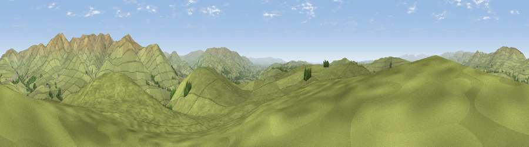

Firbank Fell
#9019 in England · top 30% of its area beats it · near GrayriggThe view, rendered

A 360° render of this exact spot computed from the terrain model, tree cover and land cover — summer colours, afternoon light, calibrated against photographs of famous viewpoints. Real trees, hedges and buildings will differ in detail.
The panorama
Grey silhouette: terrain skyline in each direction (720 bearings, Earth curvature and refraction included). Dashed green: skyline with trees (+15 m) and buildings (+8 m) as obstacles. Blue strip: how far the ground is visible on each bearing.
Where the view opens
Wedge length = distance to the farthest visible ground on that bearing (vegetation-aware). Rings at 10, 25 and 50 km.
What fills the view
97% grassland · 2% woodland
Angular shares of the visible panorama (visual magnitude), not map area. Landscape diversity 0.06 (0–1 Shannon).
Key numbers
More beautiful places nearby
The staircase of upgrades: each row has a higher view potential than everything closer. Driving times are estimates from straight-line distance, calibrated against real road routing — check an actual route before setting out.
| Place | Direction | Drive | Score |
|---|---|---|---|
| Lambrigg Fell NW Top | W · 3 km | ~7 min | 71.6 |
| Viewpoint near Sedbergh | E · 3 km | ~8 min | 73.1 |
| Winder | ESE · 4 km | ~9 min | 75.3 |
| Viewpoint near Sedbergh | E · 4 km | ~10 min | 76.3 |
| Arant Haw | E · 5 km | ~10 min | 77.4 |
| Viewpoint c9961_7292 | NE · 5 km | ~11 min | 78.2 |
| Fell Head | NE · 5 km | ~11 min | 78.8 |
| Calders | ENE · 6 km | ~12 min | 79.0 |
54.34369, -2.59334 · source: dobih hill · position refined by local search. Computed location — check access rights before visiting.